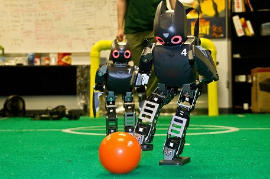

Blockchain
What is Blockchain?
Currently, most people use a trusted middleman such as a bank to make a transaction. But blockchain allows consumers and suppliers to connect directly, removing the need for a third party. Using cryptography to keep exchanges secure, blockchain provides a decentralized database, or “digital ledger”, of transactions that everyone on the network can see. This network is essentially a chain of computers that must all approve an exchange before it can be verified and recorded.
How does it work in practice?
In the case of Bitcoin, blockchain stores the details of every transaction of the digital currency, and the technology stops the same Bitcoin being spent more than once.
Why is it so revolutionary?
The technology can work for almost every type of transaction involving value, including money, goods and property. Its potential uses are almost limitless: from collecting taxes to enabling migrants to send money back to family in countries where banking is difficult.Blockchain could also help to reduce fraud because every transaction would be recorded and distributed on a public ledger for anyone to see.
Autonomous Robots
What is autonomy? Autonomy is the ability to make your own decisions. In humans, autonomy allows us to do the most meaningful, not to mention meaningless, tasks. This includes things like walking, talking, waving, opening doors, pushing buttons and changing light bulbs. In robots, autonomy is really no different. Autonomous robots, just like humans, also have the ability to make their own decisions and then perform an action accordingly. A truly autonomous robot is one that can perceive its environment, make decisions based on what it perceives and/or has been programmed to recognize and then actuate a movement or manipulation within that environment. With respect to mobility, for example, these decision-based actions include but are not limited to the following basics: starting, stopping, and maneuvering around obstacles that are in their way. But before discussing what truly makes a robot autonomous, let’s discuss one of the most common misconceptions surrounding robots today.
Immersive Experience
The definition of virtual reality comes, naturally, from the definitions for both ‘virtual’ and ‘reality’. The definition of ‘virtual’ is near and reality is what we experience as human beings. So the term ‘virtual reality’ basically means ‘near-reality’. This could, of course, mean anything but it usually refers to a specific type of reality emulation. We know the world through our senses and perception systems. In school we all learned that we have five senses: taste, touch, smell, sight and hearing. These are however only our most obvious sense organs. The truth is that humans have many more senses than this, such as a sense of balance for example. These other sensory inputs, plus some special processing of sensory information by our brains ensures that we have a rich flow of information from the environment to our minds. Everything that we know about our reality comes by way of our senses. In other words, our entire experience of reality is simply a combination of sensory information and our brains sense-making mechanisms for that information. It stands to reason then, that if you can present your senses with made-up information, your perception of reality would also change in response to it. You would be presented with a version of reality that isn’t really there, but from your perspective it would be perceived as real. Something we would refer to as a virtual reality. So, in summary, virtual reality entails presenting our senses with a computer generated virtual environment that we can explore in some fashion.